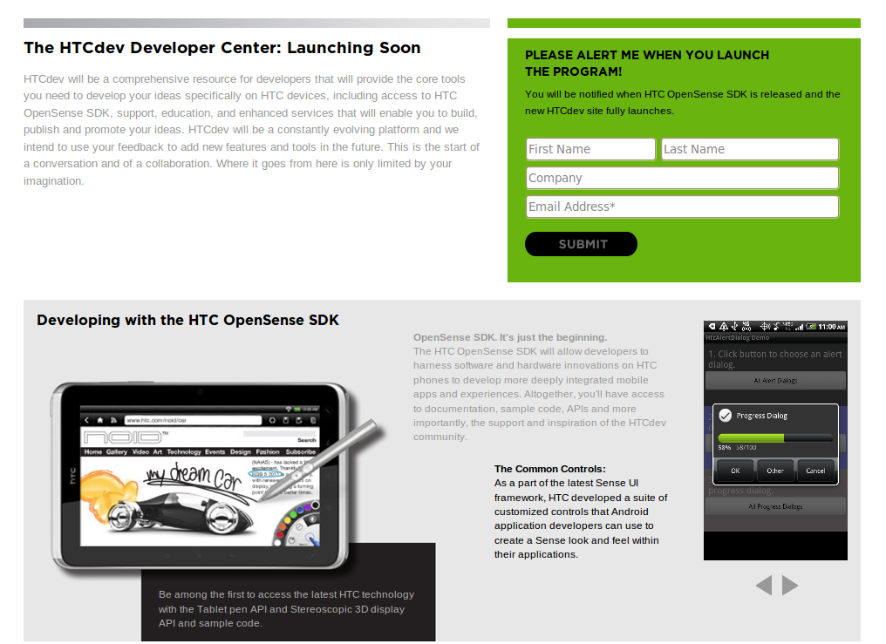

HTC 宣佈 Sense 使用者介面即將開放源碼

HTC 執行長周永明在聖地牙哥舉辦的 Uplinq 大會上，宣佈一項新的開發者計畫 HTCdev，將提供行動應用程式開發者多種工具與資源，用以發展為 HTC Sense 手機量身打造的應用軟體。隨著這項開發者計畫於今年夏天啟動，作為 HTC 手中 Android 智慧型裝置重要元素之一的 Sense 3.0 使用者介面，也將以開放源碼方式釋出。

▲ HTCdev 網站
藉由名為 HTCdev 的新開發者計畫，有興趣的開發者將可為 Sense 使用者介面開發應用程式與 widget。HTC 即將開放其 Sense 使用者介面源碼的消息，是該公司近來針對開發者釋出的友善動作之一。不久之前，HTC 才剛剛公佈將推出開機載入程序未上鎖的新裝置，以擁抱 Android 黑客社群。
HTC 表示，這項新計畫會在 2011 年夏天起跑，將支援從個人到大型企業等遍及該產業的開發者。開放源碼的 OpenSense SDK 會包含為 HTC Sense 3.0 建構應用軟體所必須的 API、範例程式、plug-in，以及教學課程、範例、文件、支援。
這份 SDK 也會針對 HTC 的 3D 顯示器和連同 HTC Flyer 推出的觸控筆，提供範例程式與 API 存取。
周永明表示，HTC 這家公司是由對行動領域的種種可能性感到興奮的工程師所組成，以透過創新促進選擇的可能性為目標，他們相信開放與想像的力量能創造此一創新，並樂見 HTCdev 將提供行動開發者新的工具，協助他們建構下一波的行動體驗。
隨著 Sense 使用者介面開放源碼的動作，Android 社群是否會以此機會修改自有 Android 版本的使用者介面，仍有待觀察。而這一切都得看 HTCdev 計畫是否允許此類散佈行為，因為過去 HTC 曾經阻止將 Sense 打包在 Android 修改版中的嘗試。
HTC 允諾將依據開發者社群的回應，為開發者工具提供定期更新與改進。
相關網址：
1. HTC 今夏稍晚開放源碼 Sense 使用者介面、開發者計畫
https://www.phonenews.com/htc-open-sources-sense-ui-dev-program-later-this-summer-16575/
2. HTC 讓 Sense 使用者介面開放源碼以接觸開發者
https://thenextweb.com/mobile/2011/06/02/htc-takes-the-sense-ui-open-source-and-reaches-out-to-developers/
3. HTC 以 HTCdev 與 OpenSense SDK 吸引開發者
https://www.androidguys.com/2011/06/03/htc-appeals-developers-htcdev-opensense-sdk/
4. HTC 計畫釋出 Sense 使用者介面 SDK
https://www.mobilecrunch.com/2011/06/03/htc-plans-to-release-sense-ui-sdk/